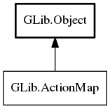

ActionMap
Object Hierarchy:
Description:
The GActionMap interface is implemented by ActionGroup implementations that operate by containing a number of named Action instances, such as SimpleActionGroup.
One useful application of this interface is to map the names of actions from various action groups to unique, prefixed names (e.g. by prepending "app." or "win."). This is the motivation for the 'Map' part of the interface name.
All known implementing classes:

Namespace: GLib
Package: gio-2.0
Content:
Methods:
Inherited Members:
All known members inherited from class GLib.Object